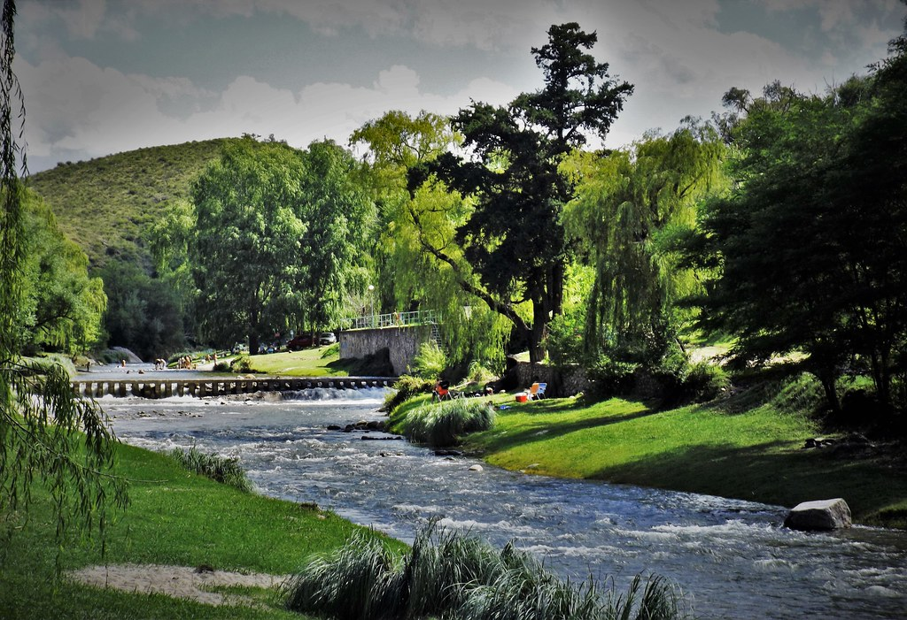
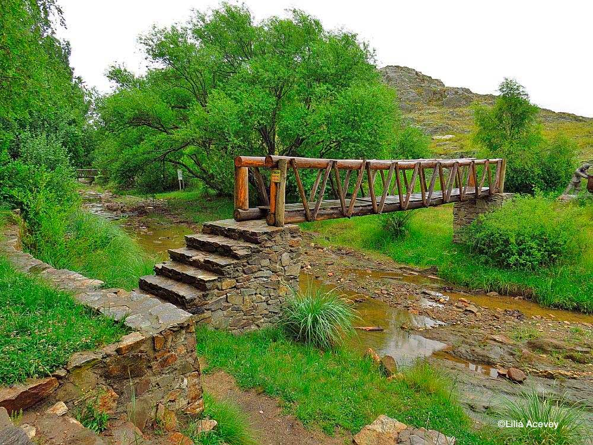
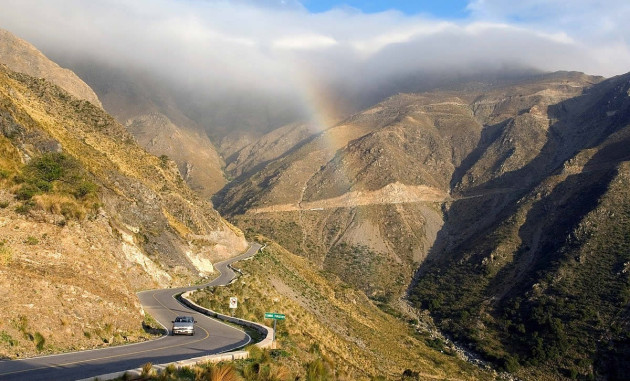

Bienvenidos a nuestro Blog Turistico
Hola, bienvenidos a nuestro blog turístico dedicado a explorar y disfrutar de todos los maravillosos lugares que nuestra hermosa provincia tiene para ofrecer. Aquí encontrarás artículos detallados sobre los principales destinos turísticos, eventos locales, y actividades que no te puedes perder.
Nuestra provincia es conocida por sus paisajes impresionantes, rica historia y cultura vibrante. Desde majestuosas montañas hasta playas tranquilas, hay algo para cada tipo de viajero. Además, ofrecemos recomendaciones sobre dónde hospedarse, dónde comer y qué hacer para que tu visita sea inolvidable.


